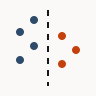

Case 2
The split that was lying to me
The problem
The leak was gone and the evaluation was still wrong.
Same warehouse, same model, and the leak from case 1 already removed. The honest feature set scored 0.84 and I was ready to write it up.
Then I looked at how the folds were built. Random 5-fold. My data is a panel: one row per client per month, twelve months, 412 clients. A random fold puts a client's January in training and their March in validation.
That is not a model generalizing to a new client. That is a model recognizing a client it has already met, in a dataset where client identity explains a lot. The 0.84 was measuring the wrong thing, and it was measuring it very well.
What I did
I rebuilt the evaluation twice: once grouped by client, once ordered by time.
First, grouped. GroupKFold on client_id, so no client appears on
both sides of any fold. This answers the question I actually care about: given a client the
model has never seen, can it call the drop?
Second, time aware. Training months end before validation months start.
This matters separately from grouping. The panel grows over time, and search behaviour in month M+6 is not drawn from the same world as month M. A grouped split still lets the model learn from the future of the panel as a whole.
Neither of these is clever. Both are one line of scikit-learn. The work was noticing.
Why all three numbers are on this page
Because the gap between them is itself the finding.
It would be easy to publish only the time-aware number and never mention the random split. It is the honest number, so quoting it alone is not lying exactly.
But the gap is a fact about the data, not about me. If the random and the grouped numbers had come out the same, that would mean client identity carries almost no signal here. They did not, so it does.
A reader who only sees 0.71 cannot tell whether I got there by careful evaluation or by having a weak model. A reader who sees all three can see the size of my own correction.
The window, and what it cost
The honest split is smaller. Here is where the rows went.
Client history depth varies a lot in this panel. Some clients have three years, some have four months.
A naive time split silently drops every client whose data starts after the training window closes. So I checked when each client's data actually begins before choosing the boundaries, and took a smaller usable set over a boundary that quietly excluded the newest clients.
The usable set went from 412 clients to 298 for the time-aware run. That is a real cost and it is the reason the time-aware figure sits on fewer rows than the other two.
What came of it
Three numbers, and I quote the lowest one.
| Split | Clients | Rows | ROC AUC | PR AUC |
|---|---|---|---|---|
| Random 5-fold | 412 | 9,840 | 0.84 | 0.42 |
| GroupKFold on client | 412 | 9,840 | 0.71 | 0.33 |
| Time aware | 298 | 6,412 | 0.68 | 0.29 |
Base rate is 0.19 across all 9,840 rows and 0.21 on the smaller time-aware set. The time-aware PR AUC of 0.29 against a 0.21 base rate is a lift of about 1.4x, which is modest and is what the problem actually supports.
0.68 is the number I quote. It is the only one of the three that answers a question a person would ask in production: for a client we have not seen, in a month that has not happened yet, does this help.
Read together with case 1, the model went from 0.91 to 0.68. Nothing about the model changed. Every point of that came from fixing what I was measuring.
What I would not claim from this
None of this is a held-out future month, and that is the number that would count.
All three figures come from cross-validation. A time-aware fold structure is closer to the real question than a random fold, and it is still not the same as sealing a month away and never touching it. That run does not exist yet. When it does, this page gets a fourth row.
I have also not checked whether a handful of large clients dominate the folds. With 412 clients of very different sizes, they might. That check is on my list and it is not done, and I would rather write that here than let a reader assume it was.
Case 3 is the same discipline applied to prompting instead of models.